Halo 3: El Final de una Trilogía Legendaria
Introducción
Halo 3 (2007) concluyó la trilogía original con una épica batalla por salvar la galaxia. El Jefe Maestro regresa a la Tierra para enfrentar al Covenant y al Flood en una campaña que abarca desde las junglas africanas hasta el Arca Installación 00. Con gráficos revolucionarios para su época y un sistema de Forge que cambiaría para siempre el multijugador, Halo 3 estableció nuevos estándares para los shooters.
El juego introdujo el sistema de equipamiento, el guardado de clips (Teatro) y el emblemático modo Forge, permitiendo a los jugadores crear y compartir sus propios mapas.
Misiones Principales
Sierra 117
El Jefe Maestro aterriza en la Tierra para rescatar al Sargento Johnson de las fuerzas Covenant. Esta misión muestra los nuevos gráficos del motor y presenta el combate en jungla, culminando con un enfrentamiento contra dos Scarabs.
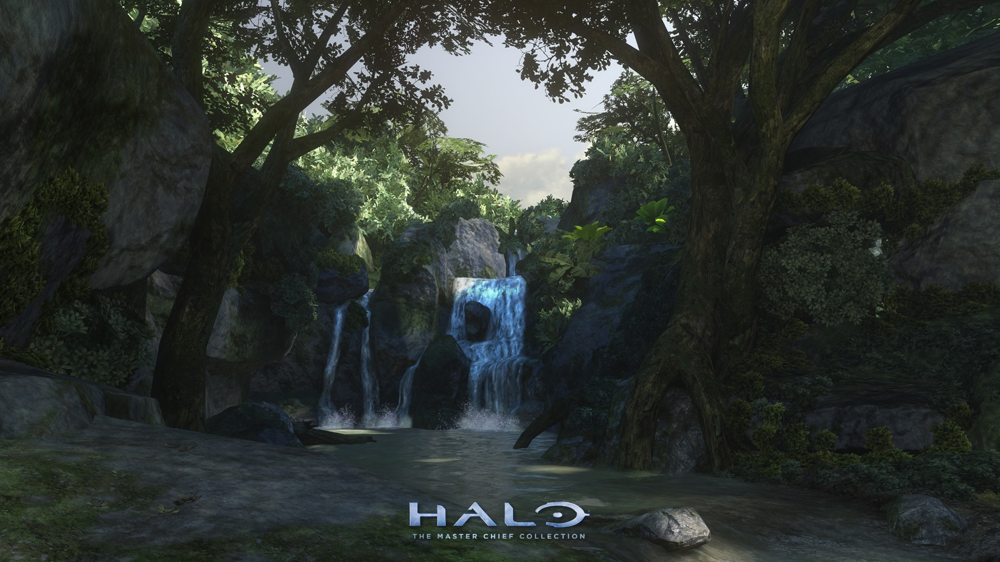Crow's Nest
El Jefe Maestro y los Marines defienden una base subterránea del ataque Covenant. Notable por sus intensos combates en interiores y la primera aparición del Brute Chieftain con martillo gravitatorio.
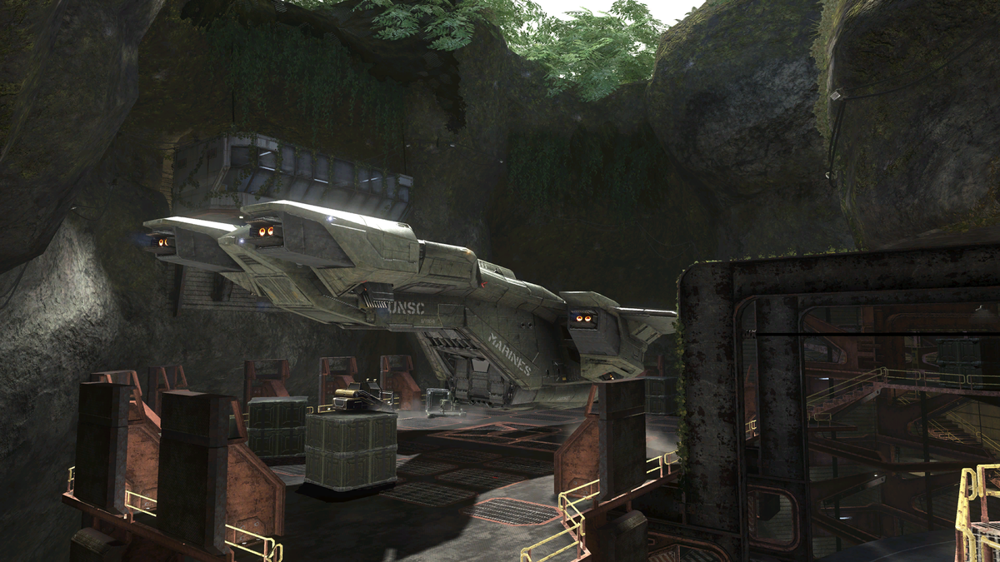Tsavo Highway
Una épica misión vehicular donde el jugador atraviesa puentes destruidos y combate múltiples wraiths y phantoms. Destaca por el uso del nuevo vehículo Chopper y los combates a gran escala.
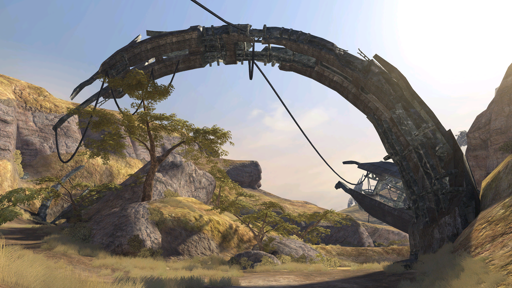The Storm
El Jefe Maestro y el Arbiter asaltan la ciudadela del Profeta de la Verdad para detener el activamiento de los anillos Halo. Incluye el icónico combate contra dos Scarabs simultáneos.
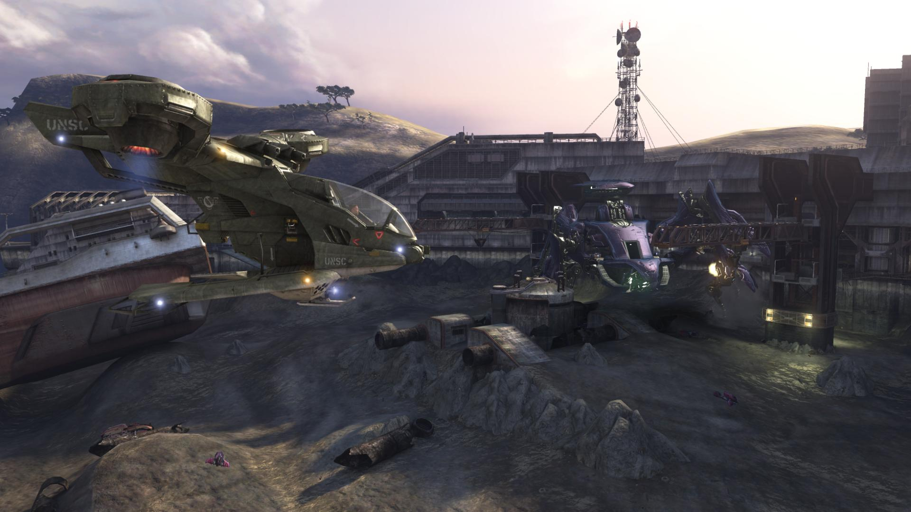The Ark
La batalla se traslada al Arca, una instalación Forerunner fuera de la Vía Láctea. Combates épicos con el nuevo vehículo Hornet y la revelación del Halo en construcción.
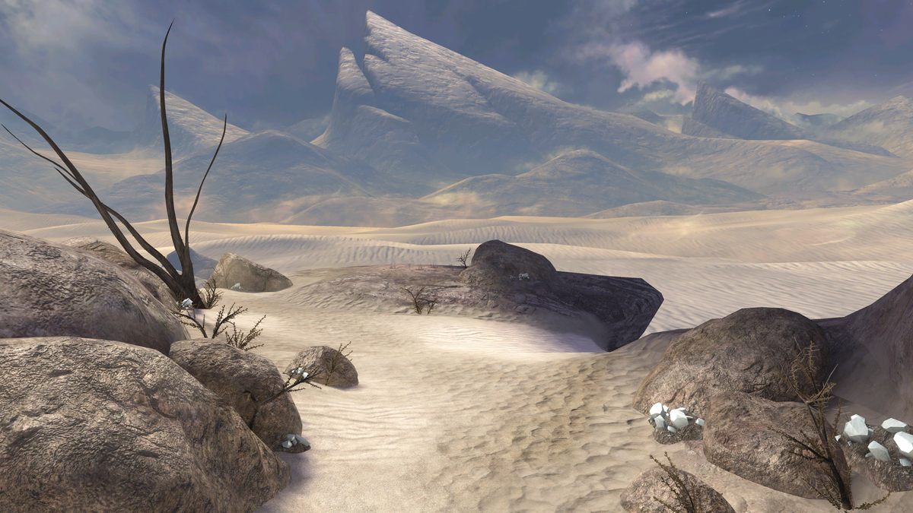The Covenant
Considerada una de las mejores misiones de la saga, incluye combates aéreos, asaltos a bases Covenant y la batalla contra el Profeta de la Verdad. Presenta el vehículo Scorpion mejorado.
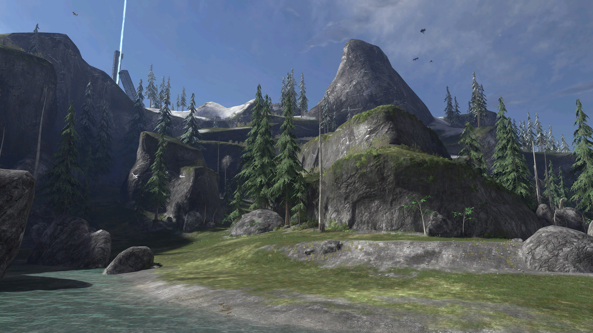Halo
La misión final donde el Jefe Maestro activa el nuevo anillo Halo para destruir el Flood. Combates intensos contra Gravemind y la emocionante secuencia de escape en Warthog.
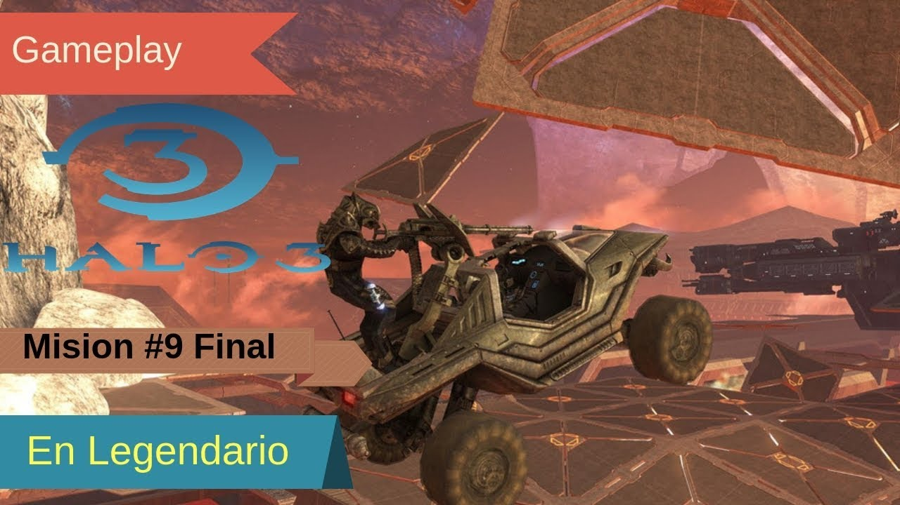Personajes Clave
| Personaje | Rol | Importancia | Imagen |
|---|---|---|---|
| Jefe Maestro (John-117) | Protagonista | Líder de la ofensiva contra el Covenant y el Flood |  |
| El Arbiter (Thel 'Vadam) | Protagonista | Líder de los Elites separatistas que se alían con los humanos | 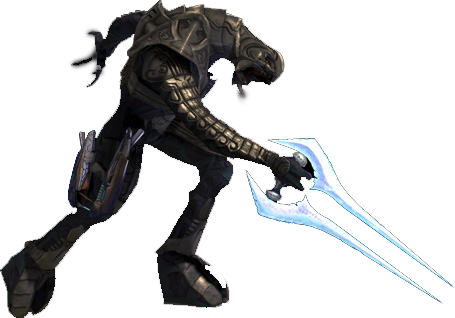 |
| Cortana | IA | Secuestrada por Gravemind, juega un papel clave en el desenlace | 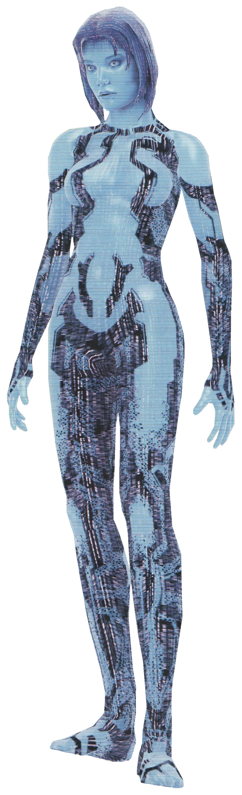 |
| Profeta de la Verdad | Antagonista | Líder supremo del Covenant que busca activar los anillos | 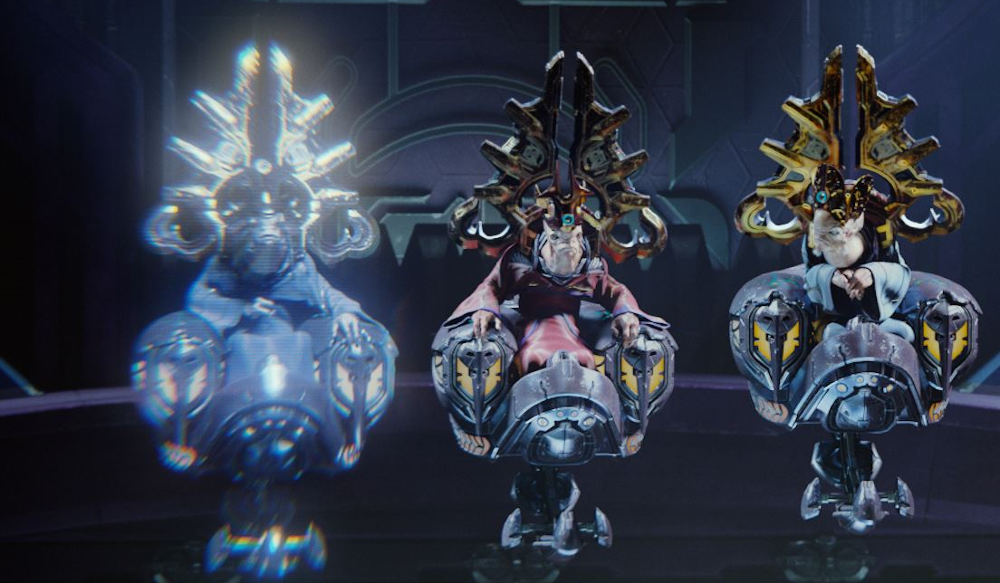 |
| Sargento Johnson | Aliado | Marine veterano que lidera las fuerzas humanas | 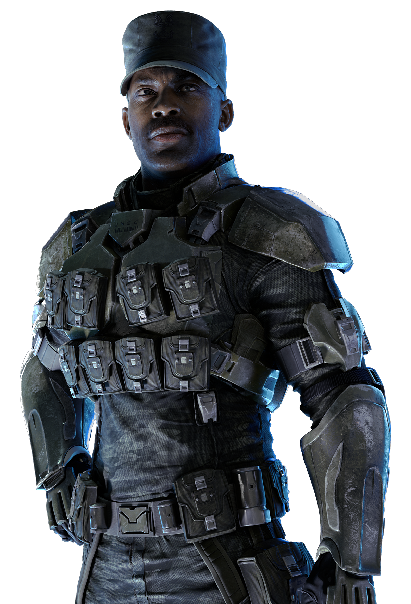 |
| Miranda Keyes | Aliado | Capitana del UNSC que sacrifica su vida para detener a Verdad | 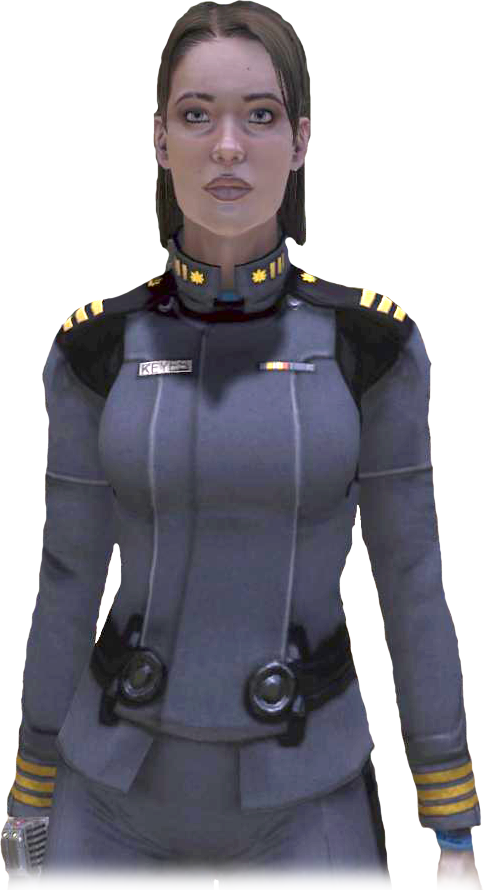 |
| Gravemind | Antagonista | Entidad colectiva del Flood que manipula eventos | 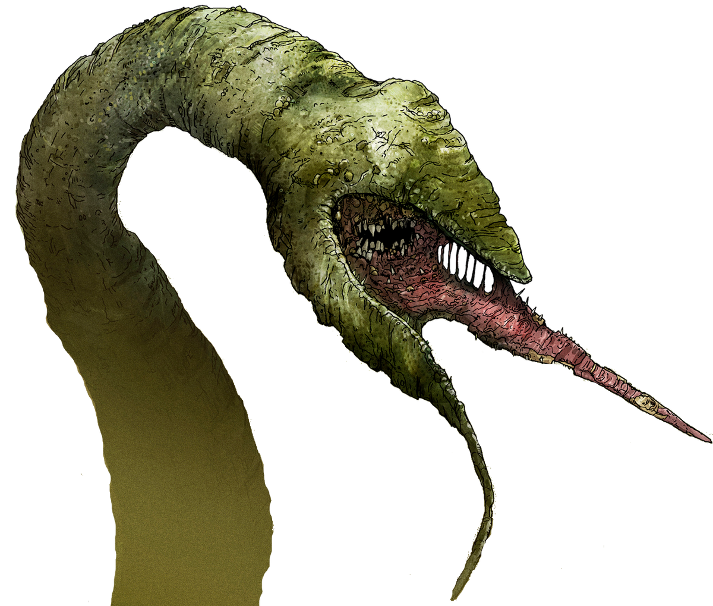 |
| 343 Guilty Spark | Personaje ambiguo | Monitor Forerunner que ayuda y obstaculiza alternativamente | 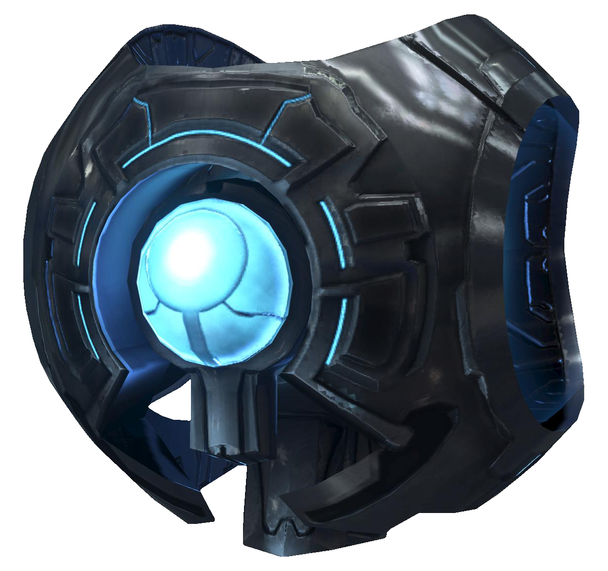 |
Nuevas Armas, Vehículos y Equipamiento
Martillo Gravitorio
Arma cuerpo a cuerpo de los Brutes que lanza enemigos por los aires. Potente pero de corto alcance.
Cañón Espartan
Lanzador de misiles portátil con seguimiento de objetivos. Efectivo contra vehículos y grupos.
Rifle de Asalto MA5C
Versión mejorada del rifle estándar con mira más precisa y menor dispersión.
Chopper
Vehículo Brute con rueda de cuchillas frontal. Ideal para embestidas y combate vehicular.
Hornet
Vehículo aéreo humano con capacidad para tres pasajeros y cañones automáticos.
Mongoose
Vehículo ligero para dos pasajeros. Rápido pero sin armamento.
Equipo: Bubble Shield (Equipamiento)
Genera un escudo esférico protector que bloquea ataques pero permite pasar a personas.
Equipo: Gravity Lift (Equipamiento)
Proyecta un campo antigravedad que lanza personas y objetos hacia arriba.
Facciones y Aliados
UNSC
Fuerzas humanas que defienden la Tierra y lanzan la ofensiva final.
Unidades: Marines, ODST, Spartans (Jefe Maestro)
Elites Separatistas
Antiguos miembros del Covenant que se alían con los humanos.
Unidades: Elite Minor, Major, Ultra, Ranger
Covenant Leales
Dirigidos por el Profeta de la Verdad y compuestos principalmente por Brutes.
Unidades: Brute Minor, Major, Chieftain, Grunts, Jackals
Flood
Parásito que amenaza con consumir toda vida en la galaxia.
Formas: Infectados, Combat Forms, Carrier Forms, Pure Forms
Terminales Forerunner
Halo 3 introdujo 7 terminales ocultos que contenían información crucial sobre el trasfondo del universo Halo:
- Revelan la historia de los Forerunners y su guerra contra los Flood
- Explican el origen del Arca y su propósito
- Detallan la relación entre los Forerunners y los humanos antiguos
- Proporcionan contexto sobre la Librarian y el Didact
Encontrar todos los terminales desbloquea el logro "Reclaimer" y contenido adicional.
Calaveras (Skulls)
Modificadores de Juego en Halo 3
Las calaveras en Halo 3 ofrecen modificadores que alteran la experiencia de juego y aumentan el puntaje en el modo Legendario:
Efectos de las Calaveras
- Iron: Reinicio de nivel al morir (sin checkpoints)
- Black Eye: Escudos solo se recargan con daño cuerpo a cuerpo
- Tough Luck: Enemigos esquivan ataques y nunca se rinden
- Catch: Enemigos lanzan más granadas
- Fog: Desactiva el sensor de movimiento
- Famine: Las armas contienen la mitad de munición
- Thunderstorm: Enemigos aparecen con rangos superiores
- Tilt: Los escudos enemigos son más resistentes
- Mythic: Enemigos tienen el doble de salud
- IWHBYD: Activa diálogos raros y divertidos
Encontrar estas calaveras requiere exploración exhaustiva de los niveles, con algunas escondidas en lugares casi inaccesibles.
Las calaveras añaden profundidad al juego y permiten personalizar la experiencia para mayor desafío o diversión.
Legado de Halo 3
Halo 3 marcó el final perfecto para la trilogía original con sus innovaciones:
- Forge: Primer editor de mapas integrado en un shooter console
- Teatro: Sistema para guardar y compartir clips de juego
- Multijugador 4K: Uno de los primeros juegos en soportar 4 jugadores en split-screen
- Equipamiento: Nuevas habilidades tácticas como el Bubble Shield
- Logros: Sistema que recompensa completar desafíos específicos
- Terminales: Objetos coleccionables que expanden el lore
El juego vendió más de 14.5 millones de copias y mantuvo una comunidad activa durante años, especialmente en el modo multijugador. Su campaña cooperativa a 4 jugadores estableció un nuevo estándar para los shooters.
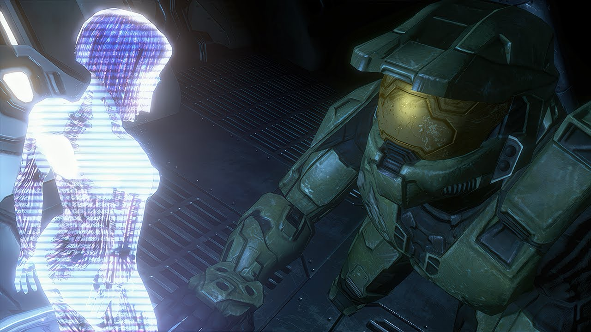Final Legendario
El emotivo final de Halo 3 muestra al Jefe Maestro atrapado en el espacio tras activar el anillo Halo, declarando "Wake me, when you need me" antes de entrar en criosueño. Cortana envía una señal de auxilio mientras la nave deriva hacia un misterioso planeta, dejando el destino del héroe en suspenso hasta Halo 4.